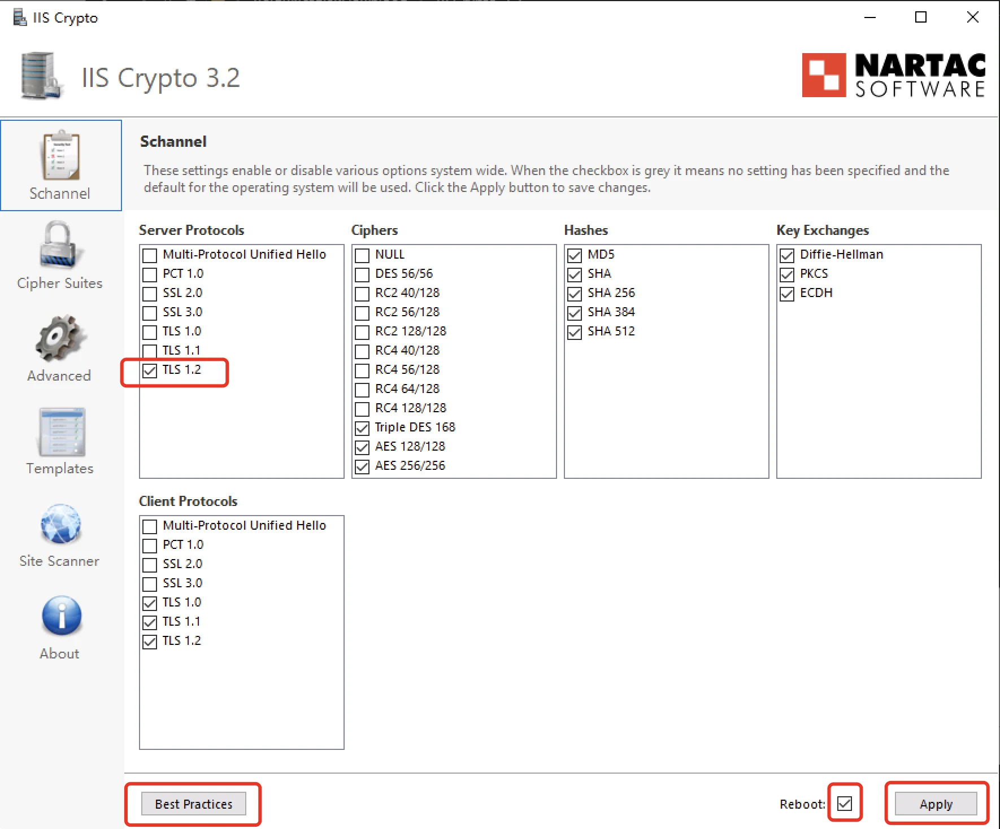
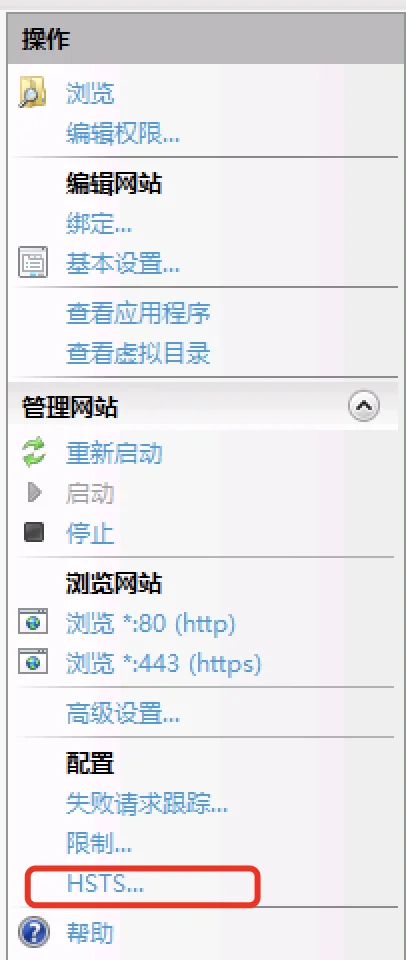
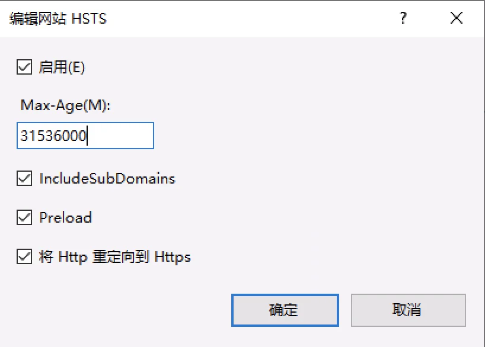
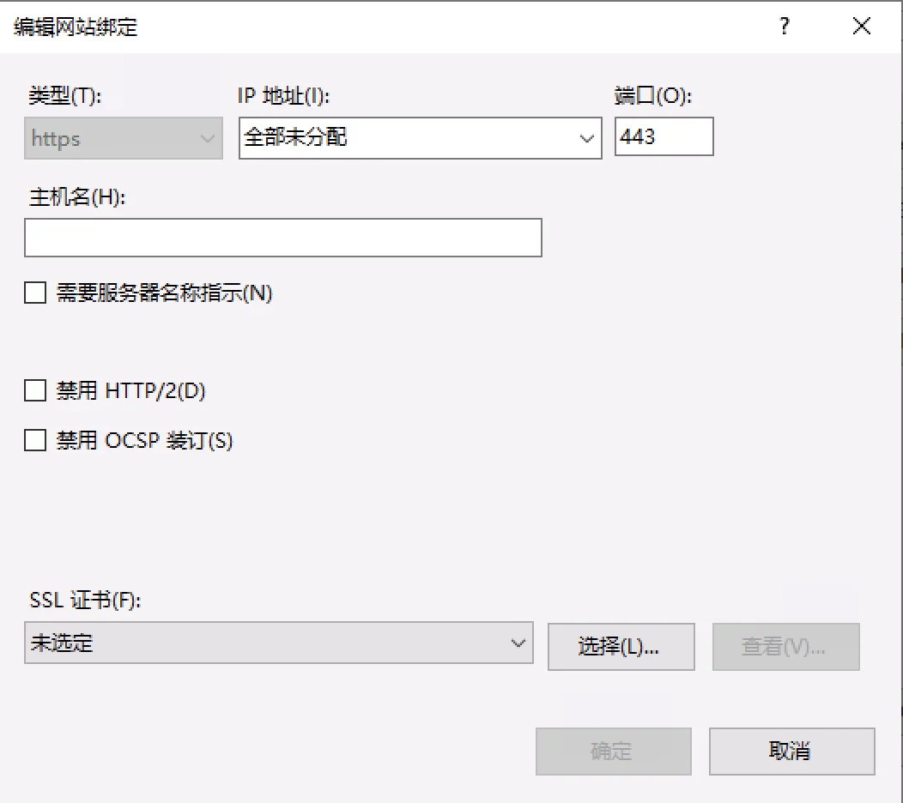

请访问原文链接：在 Qualys SSL Labs SSL 测试中获得 A+ 评级的秘技 2021 版 查看最新版。原创作品，转载请保留出处。
作者主页：sysin.org
2021 年 8 月发布的 Windows Server 2022 正式支持 QUIC 和 TLS 1.3 相关特性。至此，主流产品已经全部支持 TLSv1.3 协议。
0. 概述
Qualys SSL Labs 简介
Qualys，Inc.（NASDAQ:QLYS）是云安全和合规解决方案的先驱和领先提供商，在 100 多个国家拥有 6700 多个客户，其中包括福布斯全球 100 强和财富 100 强中的大多数。QualysGuard 云平台和集成解决方案套件通过按需提供关键的安全智能并自动化 IT 系统和 web 应用程序的全方位审核、法规遵从性和保护，帮助组织简化安全操作并降低合规成本。Qualys 成立于 1999 年，与英国电信、戴尔安全工程、富士通、IBM、NTT、Symantec、Verizon 和 Wipro 等领先的托管服务提供商和咨询机构建立了战略合作关系。该公司还是云安全联盟（CSA）的创始成员。
SSL Labs 推出的全球知名的 SSL 网站在线检测工具，会对 HTTPS 网站的证书链、安全性、性能、协议细节进行全面检测，检测完毕后会进行打分，同时给出一份详细的检测报告和改进建议。
测试网站：https://www.ssllabs.com/ssltest/
测试规则概述
January 2020
主要是修改了 TLS 1.0 和 TLS 1.1 的评分标准，TLS 1.0 和 TLS 1.1 是分别于 1996 年和 2006 年发布的老版协议，使用的是弱加密算法和系统。比如 SHA-1 和 MD5，这些算法和系统十分脆弱，存在重大安全漏洞，容易受到降级攻击的严重影响，而在 2008 年和 2017 年分别发布了协议的新版本，即 TLS 1.2 和 TLS 1.3，无疑更优于旧版本，使用起来也更安全。
2018 年，在春季 TLS 1.3 版本发布之后，苹果、谷歌、Mozilla 和微软四大浏览器制造商于 2018 年 10 月联合宣布计划在 2020 年初取消对 TLS 1.0 和 TLS 1.1 的支持。
主流浏览器客户端都提供了禁用 TLS 1.0 和 TLS 1.1 协议的大致期限：
| Browser Name | Date |
|---|---|
| Microsoft IE and Edge | First half of 2020 |
| Mozilla Firefox | March 2020 |
| Safari/Webkit | March 2020 |
| Google Chrome | January 2020 |
备注：由于受 COVID-19 影响，浏览器厂商推迟了 TLS 1.0 和 1.1 版本协议的淘汰时间。
Existing Grades Sample
| Server Configuration | Grade |
|---|---|
| TLS 1.2, TLS 1.1, TLS 1.0 + HSTS + No Warning + TLS_FALLBACK_SCSV | A+ |
| TLS 1.2, TLS 1.1, TLS 1.0 + HSTS + No Warning + No support for TLS_FALLBACK_SCSV | A |
| TLS 1.2, TLS 1.1, TLS 1.0 + HSTS + Warnings + No support for TLS_FALLBACK_SCSV | A- |
Future Grades Sample
| Server Configuration | Grade |
|---|---|
| TLS 1.2, TLS 1.1, TLS 1.0 + HSTS + No Warning + TLS_FALLBACK_SCSV | B |
| TLS 1.2, TLS 1.1, TLS 1.0 + HSTS + No Warning + No support for TLS_FALLBACK_SCSV | B |
| TLS 1.2, TLS 1.1, TLS 1.0 + HSTS + Warnings + No support for TLS_FALLBACK_SCSV | B |
| TLS 1.2 + HSTS + No Warning + TLS_FALLBACK_SCSV | A+ |
| TLS 1.2 + HSTS + No Warning + No support for TLS_FALLBACK_SCSV | A |
| TLS 1.2 + HSTS + Warnings + No support for TLS_FALLBACK_SCSV | A- |
References
- Modernizing TLS connections in Microsoft Edge and Internet Explorer 11 : https://blogs.windows.com/msedgedev/2018/10/15/modernizing-tls-edge-ie11/
- Removing Old Versions of TLS : https://blog.mozilla.org/security/2018/10/15/removing-old-versions-of-tls/
- Deprecation of Legacy TLS 1.0 and 1.1 Versions: https://webkit.org/blog/8462/deprecation-of-legacy-tls-1-0-and-1-1-versions/
- Modernizing Transport Security: https://security.googleblog.com/2018/10/modernizing-transport-security.html
- Recommendations for Secure Use of Transport Layer Security (TLS) and Datagram Transport Layer Security (DTLS): https://tools.ietf.org/html/rfc7525
1. F5 BIG-IP
BIG-IP ® 系统是一组应用交付产品，它们协同工作以确保高可用性、改进的性能、应用安全和访问控制。BIG-IP 系统的主要功能之一是将不同类型的协议和应用程序流量定向到适当的目标服务器。系统通过其 Local Traffic Manager™ 模块实现这一点，该模块可以将流量直接转发到负载平衡服务器池，或将流量发送到下一跳路由器、路由器池或直接发送到网络上的选定节点。BIG-IP 系统上可用的其他模块提供关键功能，例如将安全策略应用于网络流量、加速 HTTP 连接以及优化广域网中的连接。
F5 BIG-IP 默认 B 级别（本例基于当前最新的 BIG-IP 16.0.0）
TLS 1.2 + HSTS + No Warning + TLS_FALLBACK_SCSV = A+
（No Warning 即受信任 SSL 证书，TLS_FALLBACK_SCSV F5 默认支持）
故：A 级别 + 开启 HSTS = A+，推荐启用 TLSv1_3 和 HTTP/2
其他应用交付产品可以参照 F5 配置
1.1 Ciphers 配置：A 级别 (TLSv1.2)
根据 2020 年 1 月算法变更，需要 TLSv1.2 及以上版本才能获得 A，新的 A 级别如下：
1 | ECDHE+AES-GCM:ECDHE+AES-GCM:ECDHE+AES:ECDHE+3DES:RSA+AES-GCM:RSA+AES:RSA+3DES:-MD5:-RC4:-SSLv3:-TLSv1:-TLSv1_1 |
或者：
1 | ECDHE+AES-GCM:ECDHE+AES:ECDHE+3DES:RSA+AES-GCM:RSA+AES:RSA+3DES:-MD5:-RC4:-SSLv3:-TLSv1:-TLSv1_1 |
F5 Cipher TLS 版本写法（与 nginx 和 apache 等使用 OpenSSL 的软件略有不同）：
TLSv1
TLSv1_1
TLSv1_2
TLSv1_3
执行步骤：
编辑 SSL Profile，修改 Ciphers，将默认 Default 替换上述内容。
1.2 启用 HSTS
HSTS（HTTP Strict Transport Security，RFC6797），即 HTTP 严格安全传输，是国际互联网工程组织 IETF 正在推行一种新的 Web 安全协议，网站采用 HSTS 后，用户访问时无需手动在地址栏中输入 HTTPS，浏览器会自动采用 HTTPS 访问网站地址，从而保证用户始终访问到网站的加密链接，保护数据传输安全 (sysin)。HSTS 的作用是强制客户端（如浏览器）使用 HTTPS 与服务器创建连接。服务器开启 HSTS 的方法是，当客户端通过 HTTPS 发出请求时，在服务器返回的超文本传输协议响应头中包含 Strict-Transport-Security 字段。
Preload List：让防御更加彻底
HSTS 存在一个比较薄弱的环节，那就是浏览器没有当前网站的 HSTS 信息的时候，或者第一次访问网站的时候，依然需要一次明文的 HTTP 请求和重定向才能切换到 HTTPS，以及刷新 HSTS 信息。而就是这么一瞬间却给攻击者留下了可乘之机，使得他们可以把这一次的 HTTP 请求劫持下来，继续中间人攻击。针对这种攻击，HSTS 也有应对办法，那就是在浏览器里内置一个列表 Preload List，只要是在这个列表里的域名，无论何时、何种情况，浏览器都只使用 HTTPS 发起连接。这个列表由 Google Chromium 维护，FireFox、Safari、IE 等主流浏览器均在使用。
可以通过官网（https://hstspreload.org），查询网站是否在 Preload List，可以申请将网站加入到 Preload List。
执行步骤：
v12 及以上版本直接在 TMUI 中 Enabling HSTS in the HTTP profile 或者使用 iRuels
v11 及以下可以只能通过 iRules 实现
1 | ### iRule for HSTS HTTP Virtuals sysin ### |
1 | ### iRule for HSTS HTTPS Virtuals sysin ### |
OR
1 | when HTTP_RESPONSE { |
其中：
- max-age 是必选参数，是一个以秒为单位的数值，它代表着 HSTS Header 的过期时间，通常设置为 1 年，即 31536000 秒。
- includeSubDomains 是可选参数，如果包含它，则意味着当前域名及其子域名均开启 HSTS 保护。
- preload 是可选参数，只有当你申请将自己的域名加入到浏览器内置列表的时候才需要使用到它。
1.3 启用 TLSv1_3
F5 BIG-IP 当前 LTS 版本 14.1.0、15.1.0、16.1.0 及以上版本都可以完整支持 TLSv1_3。
BIG-IP v14 开始支持 TLSv1_3（In BIG-IP 14.0.0, the BIG-IP system adds limited support for Transport Layer Security (TLS) 1.3. Starting in BIG-IP 14.1.0.1 and later, this support was updated to provide production level support for TLS 1.3.）
默认没有启用：By default, TLS 1.3 is disabled. To enable TLS 1.3, you must remove the No TLSv1.3 option from the Enabled Options list in the Configuration utility for the Client SSL and Server SSL profiles
You can view a list of TLS 1.3 supported ciphers and groups using the following TMOS Shell (tmsh) commands:
-
To view the supported client-side ciphers, use the following command:
tmsh run util clientssl-ciphers TLSv1_3
-
To view the supported server-side ciphers, use the following command:
tmsh run util serverssl-ciphers TLSv1_3
配置启用 TLSv1_3：
编辑 ClientSSL Profle：
Ciphers：选择 Cipher Group，下拉选择 f5-secure
Options：Options List…
Enabled Options，
Disable No TLSv1.3
添加，No TLSv1 和 TLSv1.1，保留默认的 “Don’t insert empty fragments”
1.4 配置 HTTP/2
不再赘述，详见 官方文档。
配置 HTTP/2 就是在启用 HTTP profile 的 VS 上关联一个 HTTP/2 profile，核心参数配置仍然在原有的 HTTP profile 上。
特殊配置是 SSL profile 要取消勾选 Renegotiation，其他都可以使用默认配置。
1.5 TLS-FALLBACK-SCSV
TLS-FALLBACK-SCSV（TLS Fallback Signaling Cipher Suite Value）是 OpenSSL 的一种阻止协议降级攻击的特性和机制。F5 BIG-IP，Nginx 和 Apache httpd 的 HTTPS 皆基于 OpenSSL 实现，符合要求的 OpenSSL 版本即可支持。
Poodle and TLS-FALLBACK-SCSV
SSLv3 allows exploiting of the POODLE bug. This is one more major reason to disable this.
Google have proposed an extension to SSL/TLS named TLS FALLBACK SCSV that seeks to prevent forced SSL downgrades. This is automatically enabled if you upgrade OpenSSL to the following versions:
- OpenSSL 1.0.1 has TLS FALLBACK SCSV in 1.0.1j and higher.
- OpenSSL 1.0.0 has TLS FALLBACK SCSV in 1.0.0o and higher.
- OpenSSL 0.9.8 has TLS FALLBACK SCSV in 0.9.8zc and higher.
TLS Fallback Signaling Cipher Suite Value (SCSV) for Preventing Protocol Downgrade Attacks。
2. Microsoft IIS
Windows® Server 的 Internet 信息服务 (IIS) 是一种灵活、安全且可管理的 Web 服务器，用于托管 Web 上的任何内容。从媒体流到 Web 应用程序，IIS 的可扩展和开放架构已准备好处理最苛刻的任务。
根据规则：TLS 1.2 + HSTS + No Warning + TLS_FALLBACK_SCSV = A+
理论上 Windows & IIS 不支持 TLS_FALLBACK_SCSV，所以无法 A+，但是 开启 HSTS，并仅启用 TLS1.2 可以获得 A+ 得分，这样就不存在协议降级风险。
Microsoft 的 SSL 基于 Schannel 实现，与 OpenSSL 无关（或称 Microsoft TLS）。
Schannel is a Security Support Provider (SSP) that implements the Secure Sockets Layer (SSL) and Transport Layer Security (TLS) Internet standard authentication protocols.
The Security Support Provider Interface (SSPI) is an API used by Windows systems to perform security-related functions including authentication. The SSPI functions as a common interface to several SSPs, including the Schannel SSP.
2.1 IIS 获得 A 级别
测试环境：IIS 10 on Windows Server 2019
执行 ps 脚本 或者使用 IIS Crypto，将获得 A，这里以 IIS Crypto 为例 (sysin)：
IIS Crypto：点击 “Best Pratices”，Server Protocols 只勾选 TLS 1.2，Apply 并重启生效。

仅启用 TLS 1.2 将获得 A，远程桌面也可以正常连接，启用 HSTS 将获得 A+。
在早期的 Windows 版本中，仅启用 TLS 1.2 远程桌面将无法连接。
2.2 HSTS
分位两种情况，旧版需要安装 IIS 模块，新版（Windows Server 2019+）自带 HSTS 选项。
-
In older versions of IIS (IIS 7.0 to 10.0 R1703) this requirement can only archived the simple way with an installation of HTTP Strict Transport Security IIS Module.
-
Microsoft added native HTTP Strict Transport Security (HSTS) Support to IIS 10.0 Version 1709
IIS 管理器 - 选择站点 - 高级设置 - HSTS


2.3 TLSv1.3
2021 年 8 月发布的 Windows Server 2022 正式支持 HTTP/3、QUIC 和 TLS 1.3 相关特性。
在 Windows Server 2022 中的 IIS 新建一个站点将默认启用 TLS 1.3 以及 QUIC，除非手动勾选禁用。
备注：IIS 10 & Windows Server 2019 以及之前版本无法支持，参看。
2.4 HTTP/2
版本要求：
HTTP2 requires Windows 2016 with IIS 10 or later.
配置方法：
首先配置好 SSL 证书并创建 HTTPS 站点，IIS 10 默认开启 HTTP/2 协议，所以我们都不要额外去设置（可以禁用，新建站点时或者 “编辑网站” > “绑定…” 勾选 “禁用 HTTP/2”）。

在 Windows Server 2022 中的 IIS 新建一个站点将默认启用 TLS 1.3 以及 QUIC（HTTP/3），除非手动勾选禁用。
3. Nginx
nginx [engine x] 是一个 HTTP 和反向代理服务器，邮件代理服务器，和一个通用的 TCP/UDP 代理服务器，最初由 Igor Sysoev 编写。在许多负载很重的俄罗斯网站上运行了很久，包括 Yandex，Mail.Ru，VK，和 Rambler。根据 Netcraft 的说法，nginx 服务或代理 22.36% 最繁忙的网站 (2021 年 11 月)。
以下是一些成功案例：Dropbox，Netflix，Wordpress.com，FastMail.FM。
3.1 Nginx SSL 证书配置方法
1 | server { |
证书文件使用 PEM 格式。
证书文件使用相对路径时，证书文件要放在主配置文件相同目录下（默认 /etc/nginx）。
更多配置，这篇文章可以参考：Strong SSL Security on nginx
3.2 TLSv1.3
版本支持如下：
- The
TLSv1.1andTLSv1.2parameters (1.1.13, 1.0.12) work only when OpenSSL 1.0.1 or higher is used. - The
TLSv1.3parameter (1.13.0) works only when OpenSSL 1.1.1 built with TLSv1.3 support is used.
More info on the NGINX documentation
3.3 HTTP/2
版本要求：
openssl 的版本必须在 1.0.2e 及以上，执行以下命令验证：
1 | openssl version |
nginx 的版本必须在 1.9.5 以上，需要添加 --with-http_v2_module 模块，执行以下命令验证：
1 | nginx -V |
3.4 参考配置
以下配置：启用 HTTP/2、TLSv1.3、推荐的 Ciphers、HSTS，可以获得 A+ 得分
1 | server { |
4. Kubernetes ingress-nginx
4.1 概述
默认 TLS 版本和 Ciphers
nginx-ingress 默认仅使用 TLS 1.2 和 1.3，with a secure set of TLS ciphers.
默认 cipher 列表: ECDHE-ECDSA-AES128-GCM-SHA256:ECDHE-RSA-AES128-GCM-SHA256:ECDHE-ECDSA-AES256-GCM-SHA384:ECDHE-RSA-AES256-GCM-SHA384:ECDHE-ECDSA-CHACHA20-POLY1305:ECDHE-RSA-CHACHA20-POLY1305:DHE-RSA-AES128-GCM-SHA256:DHE-RSA-AES256-GCM-SHA384.
Legacy TLS 支持
如果需要兼容一些老旧的浏览器和操作系统，需要使用 ConfigMap 修改默认配置，例如：
1 | kind: ConfigMap |
HSTS 默认启用
可以在 ConfigMap 中配置参数 hsts: "false" 禁用默认行为
HTTP redirect
对于 TLS 类型的 ingress，控制器默认将 HTTP 请求定向到 HTTPS（308 Permanent Redirect response），
可以在 NGINX config map，中使用 ssl-redirect: "false" 参数全局禁用，或者针对单个 ingress 规则使用 annotation nginx.ingress.kubernetes.io/ssl-redirect: "false" 来禁用。
本例部署的 ingress-nginx 版本为 0.30.0，经过测试只要使用受信任证书，即可获得 A+ 得分。
4.2 示例
以下发布 Dashboard 为例，配置受信任 SSL 证书。
查看 Dashboard 已经正常部署（部署 Dashboard 参看其他文档）：
1 | kubectl get po,svc -n kubernetes-dashboard -o wide |
部署受信任的 SSL 证书：
1 | 创建 secret，在 ingress 不能直接使用证书需要转换为 secret 才能使用 |
配置 ingress 转发文件
1 | # vi dashboard-ingress.yaml |
host: 对应的域名
path: url 上下文
backend: 后向转发到对应的 serviceName: 和 servicePort:
注意，dashboard 默认使用 https 提供服务，ingress 默认 backend-protocol 使用 http，这里发布成功的关键是要添加 annotations 参数
1 | annotations: |
部署：
1 | kubectl apply -f dashboard-ingress.yaml |
部署成功后可以通过域名访问：https://k8s.sysin.org
5. Apache httpd
Apache HTTP Server 项目致力于开发和维护一个用于现代操作系统的开源 HTTP 服务器，包括 UNIX 和 Windows。该项目的目标是提供一个安全、高效和提供与当前 HTTP 同步的 HTTP 服务的可扩展服务器标准。
Apache HTTP 服务器（“httpd”）于 1995 年推出，自 1995 年以来一直是 Internet 上最受欢迎的 Web 服务器。1996 年 4 月。它在 2020 年 2 月庆祝了它作为一个项目的 25 岁生日。
5.1 基本配置
参看 官网文档
1 | LoadModule ssl_module modules/mod_ssl.so |
5.2 HTTP/2
Apache Module mod_http2 Available in version 2.4.17 and later
两种配置:
HTTP/2 in a VirtualHost context (TLS only)
1 | Protocols h2 http/1.1 |
Allows HTTP/2 negotiation (h2) via TLS ALPN in a secure <VirtualHost>. HTTP/2 preamble checking (Direct mode, see H2Direct) is disabled by default for h2.
HTTP/2 in a Server context (TLS and cleartext)
1 | Protocols h2 h2c http/1.1 |
Allows HTTP/2 negotiation (h2) via TLS ALPN for secure <VirtualHost>. Allows HTTP/2 cleartext negotiation (h2c) upgrading from an initial HTTP/1.1 connection or via HTTP/2 preamble checking (Direct mode, see H2Direct).
5.3 HSTS
1 | Load modules (or use the IfModule) |
Rewrite HTTP connections and redirect them to HTTPS:
1 | Redirect HTTP connections to HTTPS |
Now configure the virtual host:
1 | <VirtualHost *:443> |
5.4 TLSv1.3
版本要求：
Apache version 2.4.36 or greater. (网上文章传言 2.4.38 是错误的！)
OpenSSL version 1.1.1 or greater.
CentOS 8 和 Ubuntu 20.04 自带软件包满足要求，低版本需要编译安装。
1 | [root@c8 ~]# openssl version |
1 | root@u20:~# openssl version |
仅启用 TLS 1.2：
1 | SSLProtocol -all +TLSv1.2 |
配置项如下所示:
1 | <VirtualHost *:443> |
启用 TLS 1.3 和 1.2：
The Apache version 2.4.36 or higher versions support TLS v1.3. You must upgrade Apache packages before enabled TLS 1.3 in SSL settings.
1 | SSLProtocol -all +TLSv1.2 +TLSv1.3 |
配置项如下所示:
1 | <VirtualHost *:443> |
记得重启 Apache 服务才能生效。
5.5 参考配置
1 | For CentOS |
配置文件自动增加 “/etc/httpd/conf.modules.d/00-ssl.conf”
1 | echo ' |
其他 Cipher 参考配置
1 | SSLCipherSuite HIGH:!aNULL:!eNULL:!EXPORT:!DES:!RC4:!MD5:!kRSA #A |
6. Apache Tomcat
Apache Tomcat® 软件是 Jakarta Servlet、Jakarta Server Pages、Jakarta Expression Language、Jakarta WebSocket、Jakarta Annotations 和 Jakarta Authentication 规范的开源实现。这些规范是 Jakarta EE 平台的一部分。Jakarta EE 平台是 Java EE 平台的演变。Tomcat 10 及更高版本实现了作为 Jakarta EE 一部分开发的规范。Tomcat 9 及更早版本实现了作为 Java EE 一部分开发的规范。
Tomcat 不使用 OpenSSL，所以不支持 TLS-FALLBACK-SCSV 特性，在 Tomcat 9 最新版默认配置即可获得 A 得分，开启 HSTS 也是 A 得分。
6.1 基本配置
打开 conf/server.xml 文件可以看到默认的 SSL/TLS HTTP/1.1 和 HTTP/2 配置方法如下：
1 | <!-- Define an SSL/TLS HTTP/1.1 Connector on port 8443 |
6.2 HTTP/2
版本要求：Tomcat 8.5.0，2016-03-24，开始支持 HTTP/2
配置 HTTP/2：即增加 <UpgradeProtocol className="org.apache.coyote.http2.Http2Protocol" />
根据官方文档使用 PEM 格式证书测试失败，这里使用 PFX 格式。
Tomcat 9 强制要求证书别名设置为 tomcat。您需要使用以下 keytool 命令（这里的证书原来别名是 alias，阿里云申请的免费证书默认别名）转换证书别名为 tomcat：
keytool -changealias -keystore my-cert.pfx -alias alias -destalias tomcat
1 | <!-- Define an SSL/TLS HTTP/1.1 Connector on port 443 with HTTP/2 |
ciphers 参看：Ciphers，HowTo SSLCiphers
protocols 写法：
1 | The names of the protocols to support when communicating with clients. This should be a list of any combination of the following: |
6.3 HSTS
Response Header 配置
Enabling HSTS (to include maxAgeSeconds = 31536000, includeSubDomains, and preload) requires two modifications of the Tomcat’s conf/web.xml file:
1). 启用 HSTS 支持，查找以下部分（通过搜索 “httpHeaderSecurity” 关键词）：
1 | <!-- |
替换为（或者新增）：
1 | <filter> |
2). 继续搜索 “httpHeaderSecurity” 关键词，查找如下内容，在 “Built In Filter Mappings” 这一段:
1 | <!-- |
移除注释，如下:
1 | <filter-mapping> |
6.4 HTTP redirection
编辑 server.xml，将 HTTP 重定向到 HTTPS，这里分别使用 80 和 443 端口，搜索 “Connector” 关键词，查找到如下部分：
1 | <!-- |
修改为：
1 | <Connector executor="tomcatThreadPool" |
或者修改这里：
1 | <Connector port="8080" protocol="HTTP/1.1" |
修改为：
1 | <Connector port="80" protocol="HTTP/1.1" |
7. HAProxy
HAProxy 是一种免费、快速且可靠的反向代理，可为基于 TCP 和 HTTP 的应用程序提供高可用性、负载平衡和代理。它特别适用于流量非常高的网站，并为世界上大部分访问量最大的网站提供支持。多年来，它已成为事实上的标准开源负载均衡器，现在随大多数主流 Linux 发行版一起提供，并且通常默认部署在云平台中。由于它不做广告，我们只知道它在管理员报告时被使用:-)
HAProxy 核心团队并行维护多个版本。从 1.8 版开始，每年都会发布两个主要版本。第一个数字通常表示重大更改（配置格式等），但实际上很少更改。第二个数字表示新功能。两者构成一个分支。这些数字后面会出现一个额外的数字，以指示错误修复版本。
偶数的分支称为 “LTS”（用于 “长期支持”），并且在发布后维护 5 年的区域。在此期间，他们将收到针对发布后发现的错误的修复程序。这些分支针对的是寻求极端稳定性并且不想过于频繁地验证新版本但仍希望收到修复程序的一般用户。
奇数分支仅被称为 “稳定”，它们针对那些喜欢经常升级以从现代功能中受益的高技能用户，并且在出现问题时也能够回滚。这些版本的维护期为 12 到 18 个月。
7.1 SSL cipher
Global 参数中关于 SSL 的配置
以下三个参数是定义 front：
1 | ssl-default-bind-ciphers <ciphers> #适用于 TLSv1.2 及以下版本 |
1 | ssl-default-bind-ciphersuites <ciphersuites> #OpenSSL 1.1.1 or later，TLSv1.3 |
同时需要同时支持 TLSv1.2 及以下版本和 TLSv1.3 两个参数需要同时设置。
示例：
1 | ssl-default-bind-options ssl-min-ver TLSv1.2 no-tls-tickets |
1 | ssl-default-server-options no-sslv3 no-tlsv10 no-tlsv11 no-tls-tickets |
以下对应定义 backend server：
适用于 TLSv1.2 及以下版本
适用于 OpenSSL 1.1.1 or later，TLSv1.3
参看官方文档：Configuring TLS Settings
参考配置：
1 | global |
7.2 HTTP/2
HAProxy 1.8 及以上版本支持 HTTP/2
From the 1.8 announcement:
HAProxy 1.8 now supports HTTP/2 on the client side (in the frontend sections) and can act as a gateway between HTTP/2 clients and your HTTP/1.1 and HTTP/1.0 applications.
HTTP/2 协议已经被迅速采用，HAProxy 1.8 现在在客户端支持 HTTP/2（在前端部分），并且可以充当 HTTP/2 客户端与 HTTP/1.1 和 HTTP/1.0 应用程序之间的网关。
要启用对 HTTP/2 的支持，前端部分的绑定行必须配置为 SSL 端点，alpn 必须宣布 h2，如下：
1 | frontend myapp |
备注：cert.crt 证书采用 PEM 格式，包含私钥、证书，证书链在一个文件中。
7.3 TLSv1.3
要求：HAProxy 1.8.1 及以上，OpenSSL 1.1.1 及以上。
参数：ssl-default-bind-ciphersuites，参看上述 SSL cipher 部分的描述。
7.4 HSTS
方法如下：
1 | frontend public |
Rewriting HTTP responses 方法示例
- add-header
语法：
http-response add-header <name> <fmt> [<condition>]
示例：
http-response add-header X-Via %[env(HOSTNAME)]
- set-header
相当于覆盖或者替换原有 header
语法：
http-response set-header <name> <fmt> [<condition>]
示例：
http-response set-header Server webserver #hide server header
- del-header
语法：
http-response del-header <name> [<condition>]
示例：
http-response del-header X-Varnish
- replace-value
高级替换
语法：
http-response replace-value <name> <match-regex> <replace-fmt> [<condition>]
7.5 Redirecting HTTP Requests
重定向 HTTP 请求到 HTTPS，可以参考以下官方示例：
Examples of traffic redirection:
Append a www. prefix in front of all URLs that do not have it:
1 | acl has_www hdr_beg(host) -i www |
Redirect all HTTP traffic to HTTPS when SSL is handled by haproxy:
1 | acl http ssl_fc,not |
Send redirects for requests for articles without a ‘/’:
1 | acl missing_slash path_reg ^/article/[^/]*$ |
Move the login URL only to HTTPS:
1 | acl http ssl_fc,not |
7.6 参考配置
Config files and scripts for HAProxy 1.8 with HTTP/2 and dynamic reconfiguration
An ‘haproxy.cfg’ with:
- The ability to switch backends dynamically
- HTTP/2 support in all browsers
- Logging to systemd
- The various www vs non-www, HTTP vs HTTPS combinations redirected to a single HTTPS site.
- A branded ‘sorry’ page
- A separate server that handles blogs and marketing content
- Support for HTML5 Server Sent Events
- An A+ on the SSL Labs test
See the full docs at fast EV HTTPS verification provider CertSimple.
1 | #https://github.com/certsimple/haproxy-http2-load-balancing-config/blob/master/haproxy.cfg |
8. Varnish with Hitch
笔者写了一篇文章描述了整个配置过程，访问这里查看：Varnish with Hitch HTTP/2 implement on CentOS 8.0
Varnish Cache 是一种 web 应用程序加速器，同时以被用于缓存的 HTTP 反向代理而闻名。Varnish HTTP/2 前端通过 Hitch 代理实现。Hitch 是 Varnish Software 开发的基于 libev 的高性能 SSL/TLS 开源代理软件。
8.1 启动 Varnish 支持 HTTP/2
默认情况下，Varnish 中的 HTTP/2 支持是禁用的，因此必须添加一个特性标志才能启用它。即通过传递 “-p feature=+http2” 作为 Varnish 的启动参数来实现。
您可以通过运行 varnishadm param.show feature 命令来检查是否已启用参数。
1 | varnishadm param.show feature |
启动 Varnish
本例中，Varnish 使用默认配置，事先运行了 Nginx，将 Nginx 默认端口修改为 8080 即可（具体过程略）。
1 | varnishd -a :80 -a localhost:6086,PROXY -p feature=+http2 -f /etc/varnish/default.vcl |
验证 Varnish 已经开启 HTTP/2 支持
1 | varnishadm param.show feature |
8.2 hitch 参考配置：Ciphers，HTTP/2 和 TLSv1.3
版本要求：
- Cache 5.0 开始实验性的支持 HTTP/2
- Varnish 6.0 完整支持 HTTP/2
- hitch 1.5 版本开始支持 TLS 1.3
示例配置（更多参数参看官方文档）：
1 | mv /etc/hitch/hitch.conf /etc/hitch/hitch.conf.bak |
OCSP staple 相关配置参看 官方文档
以上配置将获得 A 评级，加上下面的 HSTS 即可获得 A+ 评级。
8.3 HSTS
编辑 varnish vcl，如下字段添加：
1 | sub vcl_deliver { |

文章用于推荐和分享优秀的软件产品及其相关技术，所有软件默认提供官方原版（免费版或试用版），免费分享。对于部分产品笔者加入了自己的理解和分析，方便学习和研究使用。任何内容若侵犯了您的版权，请联系作者删除。如果您喜欢这篇文章或者觉得它对您有所帮助，或者发现有不当之处，欢迎您发表评论，也欢迎您分享这个网站，或者赞赏一下作者，谢谢！
 支付宝赞赏
支付宝赞赏
 微信赞赏
微信赞赏
赞赏一下